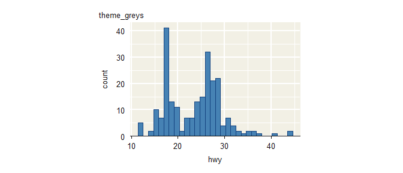
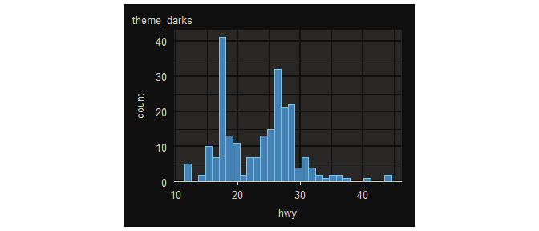
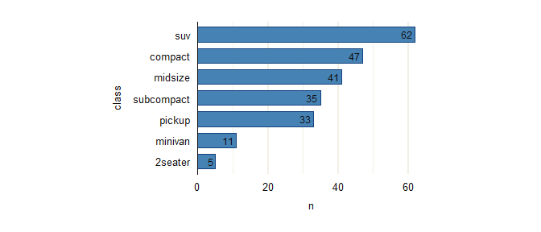
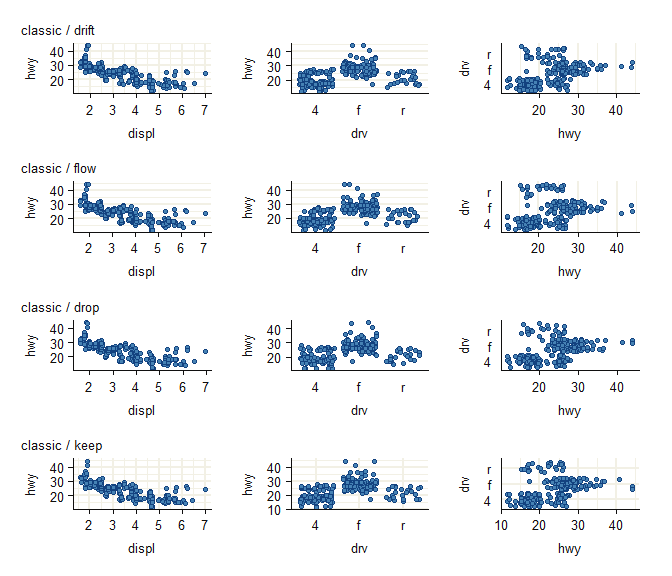
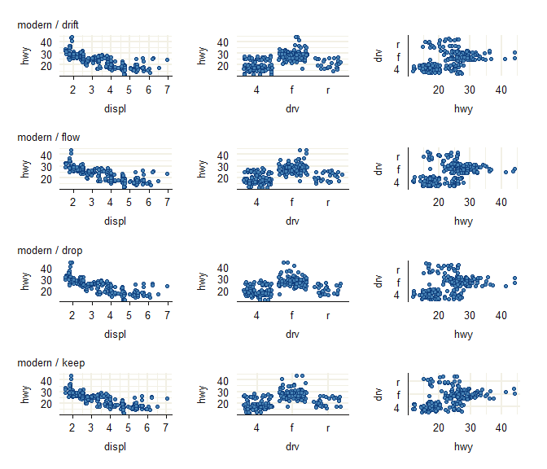
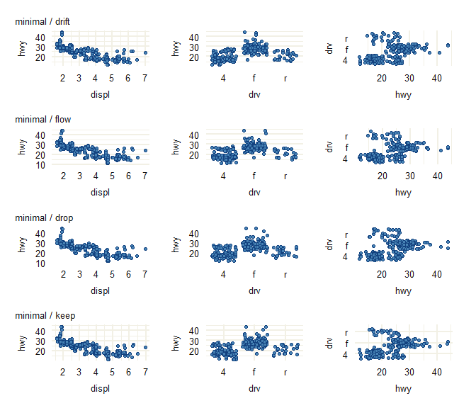
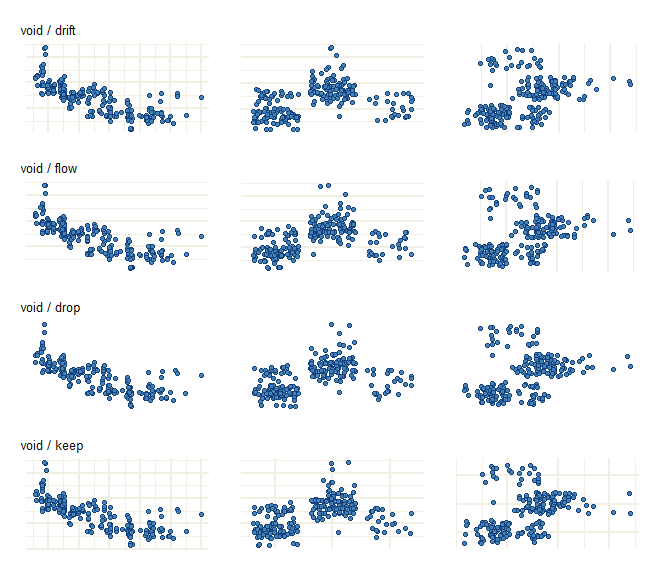

The objective of ggrefine is to provide complete themes for publication-quality ‘ggplot2’ visualisation. Functions are provided to modify these based on the positional axis scales and orientation of a particular plot.
Installation
Install from CRAN, or development version from GitHub.
install.packages("ggrefine")
pak::pak("davidhodge931/ggrefine")Theme
The themes are built to work with the refine functions in that they have all axis and panel grid elements.
They can also be customised easily.
The theme_ggplot2 function has a smart panel_grid_colour default that is derived from the panel_background_fill.
library(ggplot2)
library(patchwork)
library(ggrefine)
set_theme(theme_lights())
update_panel_size(heights = unit(5, "cm"), widths = unit(7.5, "cm"))
p <- mpg |>
ggrefine() +
aes(x = hwy) +
geom_histogram(
stat = "bin",
) +
scale_y_zero() +
scale_fill_blendcolour_discrete() +
refine_axis_grid(discrete = "none")
p + labs(title = "theme_lights")
#> `stat_bin()` using `bins = 30`. Pick better value `binwidth`.
#> Warning in plot_theme(plot): The `strip.positionment` theme element is not
#> defined in the element hierarchy.
update_greys()
p + labs(title = "theme_greys")
#> `stat_bin()` using `bins = 30`. Pick better value `binwidth`.
#> Warning in plot_theme(plot): The `strip.positionment` theme element is not
#> defined in the element hierarchy.
update_darks()
p + labs(title = "theme_darks")
#> `stat_bin()` using `bins = 30`. Pick better value `binwidth`.
#> Warning in plot_theme(plot): The `strip.positionment` theme element is not
#> defined in the element hierarchy.
Scales and Aesthetics
The package provides dynamic color and fill aesthetic and scale helpers that evaluate aesthetics late to provide automatic colour or fill properties. It features blend scales (scale_blend) to automatically compute complementary outline or fill, as well as contrast helpers (aes_contrastcolour(discrete = “none”) and aes_panel_contrast(discrete = “none”)) to adaptively select light or dark colours based on the fill or set panel background.
It is recommended to use the ggrefine function, followed by ggplot2::aes, and change the colour/fill or palettes using update_palette. This ensures these functions will work in all situations.
update_palette(discrete = jumble::jumble)
penguins |>
tidyr::drop_na() |>
dplyr::count(species, sex) |>
ggrefine() +
aes(x = sex, y = n, fill = species, label = n) +
geom_col(width = 0.5, position = position_dodge2()) +
scale_y_zero(name = NULL, labels = NULL) +
scale_fill_blendcolour_discrete(name = NULL) +
geom_text(
aes_contrastcolour(discrete = "none"),
position = position_dodge2(width = 0.5),
vjust = 1.33,
) +
refine_axis_grid(discrete = "x")
#> Warning in plot_theme(plot): The `strip.positionment` theme element is not
#> defined in the element hierarchy.
update_palette(discrete = scales::pal_hue())
update_panel_size(heights = NULL, widths = NULL)Refine
A single refine_axis_grid() function is provided.
The premise is that it is useful to set themes that have all axis and panel grid elements - and then adjust depending on the positional axis scales and orientation of a particular plot.
refine_axis_grid() is controlled by two arguments:
- axis:
axis_mode = "classic","modern","minimal", or"void". - panel grid:
grid_mode = "drift","flow","drop", or"keep".
Together these remove or retain particular axis and panel grid components for different positional scales (and the intended orientation of the plot).
Note scales can also be used to remove the relevant axis.title and axis.text.
p_discrete_none <- mpg |>
ggrefine() +
aes(x = displ, y = hwy) +
geom_jitter() +
scale_fill_blendcolour_discrete()
p_discrete_x <- mpg |>
ggrefine() +
aes(x = drv, y = hwy) +
geom_jitter() +
scale_fill_blendcolour_discrete()
p_discrete_y <- mpg |>
ggrefine() +
aes(x = hwy, y = drv) +
geom_jitter() +
scale_fill_blendcolour_discrete()
patchwork::wrap_plots(
p_discrete_none + refine_axis_grid(discrete = "none", axis_mode = "classic", grid_mode = "drift") + labs(title = "classic / drift"),
p_discrete_x + refine_axis_grid(discrete = "x", axis_mode = "classic", grid_mode = "drift"),
p_discrete_y + refine_axis_grid(discrete = "y", axis_mode = "classic", grid_mode = "drift"),
p_discrete_none + refine_axis_grid(discrete = "none", axis_mode = "classic", grid_mode = "flow") + labs(title = "classic / flow"),
p_discrete_x + refine_axis_grid(discrete = "x", axis_mode = "classic", grid_mode = "flow"),
p_discrete_y + refine_axis_grid(discrete = "y", axis_mode = "classic", grid_mode = "flow"),
p_discrete_none + refine_axis_grid(discrete = "none", axis_mode = "classic", grid_mode = "drop") + labs(title = "classic / drop"),
p_discrete_x + refine_axis_grid(discrete = "x", axis_mode = "classic", grid_mode = "drop"),
p_discrete_y + refine_axis_grid(discrete = "y", axis_mode = "classic", grid_mode = "drop"),
p_discrete_none + refine_axis_grid(discrete = "none", axis_mode = "classic", grid_mode = "keep") + labs(title = "classic / keep"),
p_discrete_x + refine_axis_grid(discrete = "x", axis_mode = "classic", grid_mode = "keep"),
p_discrete_y + refine_axis_grid(discrete = "y", axis_mode = "classic", grid_mode = "keep"),
ncol = 3
)
#> Warning in plot_theme(plot): The `strip.positionment` theme element is not defined in the element hierarchy.
#> The `strip.positionment` theme element is not defined in the element hierarchy.
#> The `strip.positionment` theme element is not defined in the element hierarchy.
#> The `strip.positionment` theme element is not defined in the element hierarchy.
#> The `strip.positionment` theme element is not defined in the element hierarchy.
#> The `strip.positionment` theme element is not defined in the element hierarchy.
#> The `strip.positionment` theme element is not defined in the element hierarchy.
#> The `strip.positionment` theme element is not defined in the element hierarchy.
#> The `strip.positionment` theme element is not defined in the element hierarchy.
#> The `strip.positionment` theme element is not defined in the element hierarchy.
#> The `strip.positionment` theme element is not defined in the element hierarchy.
#> The `strip.positionment` theme element is not defined in the element hierarchy.
#> The `strip.positionment` theme element is not defined in the element hierarchy.
patchwork::wrap_plots(
p_discrete_none + refine_axis_grid(discrete = "none", axis_mode = "modern", grid_mode = "drift") + labs(title = "modern / drift"),
p_discrete_x + refine_axis_grid(discrete = "x", axis_mode = "modern", grid_mode = "drift"),
p_discrete_y + refine_axis_grid(discrete = "y", axis_mode = "modern", grid_mode = "drift"),
p_discrete_none + refine_axis_grid(discrete = "none", axis_mode = "modern", grid_mode = "flow") + labs(title = "modern / flow"),
p_discrete_x + refine_axis_grid(discrete = "x", axis_mode = "modern", grid_mode = "flow"),
p_discrete_y + refine_axis_grid(discrete = "y", axis_mode = "modern", grid_mode = "flow"),
p_discrete_none + refine_axis_grid(discrete = "none", axis_mode = "modern", grid_mode = "drop") + labs(title = "modern / drop"),
p_discrete_x + refine_axis_grid(discrete = "x", axis_mode = "modern", grid_mode = "drop"),
p_discrete_y + refine_axis_grid(discrete = "y", axis_mode = "modern", grid_mode = "drop"),
p_discrete_none + refine_axis_grid(discrete = "none", axis_mode = "modern", grid_mode = "keep") + labs(title = "modern / keep"),
p_discrete_x + refine_axis_grid(discrete = "x", axis_mode = "modern", grid_mode = "keep"),
p_discrete_y + refine_axis_grid(discrete = "y", axis_mode = "modern", grid_mode = "keep"),
ncol = 3
)
#> Warning in plot_theme(plot): The `strip.positionment` theme element is not defined in the element hierarchy.
#> The `strip.positionment` theme element is not defined in the element hierarchy.
#> The `strip.positionment` theme element is not defined in the element hierarchy.
#> The `strip.positionment` theme element is not defined in the element hierarchy.
#> The `strip.positionment` theme element is not defined in the element hierarchy.
#> The `strip.positionment` theme element is not defined in the element hierarchy.
#> The `strip.positionment` theme element is not defined in the element hierarchy.
#> The `strip.positionment` theme element is not defined in the element hierarchy.
#> The `strip.positionment` theme element is not defined in the element hierarchy.
#> The `strip.positionment` theme element is not defined in the element hierarchy.
#> The `strip.positionment` theme element is not defined in the element hierarchy.
#> The `strip.positionment` theme element is not defined in the element hierarchy.
#> The `strip.positionment` theme element is not defined in the element hierarchy.
patchwork::wrap_plots(
p_discrete_none + refine_axis_grid(discrete = "none", axis_mode = "minimal", grid_mode = "drift") + labs(title = "minimal / drift"),
p_discrete_x + refine_axis_grid(discrete = "x", axis_mode = "minimal", grid_mode = "drift"),
p_discrete_y + refine_axis_grid(discrete = "y", axis_mode = "minimal", grid_mode = "drift"),
p_discrete_none + refine_axis_grid(discrete = "none", axis_mode = "minimal", grid_mode = "flow") + labs(title = "minimal / flow"),
p_discrete_x + refine_axis_grid(discrete = "x", axis_mode = "minimal", grid_mode = "flow"),
p_discrete_y + refine_axis_grid(discrete = "y", axis_mode = "minimal", grid_mode = "flow"),
p_discrete_none + refine_axis_grid(discrete = "none", axis_mode = "minimal", grid_mode = "drop") + labs(title = "minimal / drop"),
p_discrete_x + refine_axis_grid(discrete = "x", axis_mode = "minimal", grid_mode = "drop"),
p_discrete_y + refine_axis_grid(discrete = "y", axis_mode = "minimal", grid_mode = "drop"),
p_discrete_none + refine_axis_grid(discrete = "none", axis_mode = "minimal", grid_mode = "keep") + labs(title = "minimal / keep"),
p_discrete_x + refine_axis_grid(discrete = "x", axis_mode = "minimal", grid_mode = "keep"),
p_discrete_y + refine_axis_grid(discrete = "y", axis_mode = "minimal", grid_mode = "keep"),
ncol = 3
)
#> Warning in plot_theme(plot): The `strip.positionment` theme element is not defined in the element hierarchy.
#> The `strip.positionment` theme element is not defined in the element hierarchy.
#> The `strip.positionment` theme element is not defined in the element hierarchy.
#> The `strip.positionment` theme element is not defined in the element hierarchy.
#> The `strip.positionment` theme element is not defined in the element hierarchy.
#> The `strip.positionment` theme element is not defined in the element hierarchy.
#> The `strip.positionment` theme element is not defined in the element hierarchy.
#> The `strip.positionment` theme element is not defined in the element hierarchy.
#> The `strip.positionment` theme element is not defined in the element hierarchy.
#> The `strip.positionment` theme element is not defined in the element hierarchy.
#> The `strip.positionment` theme element is not defined in the element hierarchy.
#> The `strip.positionment` theme element is not defined in the element hierarchy.
#> The `strip.positionment` theme element is not defined in the element hierarchy.
patchwork::wrap_plots(
p_discrete_none + refine_axis_grid(discrete = "none", axis_mode = "void", grid_mode = "drift") + labs(title = "void / drift"),
p_discrete_x + refine_axis_grid(discrete = "x", axis_mode = "void", grid_mode = "drift"),
p_discrete_y + refine_axis_grid(discrete = "y", axis_mode = "void", grid_mode = "drift"),
p_discrete_none + refine_axis_grid(discrete = "none", axis_mode = "void", grid_mode = "flow") + labs(title = "void / flow"),
p_discrete_x + refine_axis_grid(discrete = "x", axis_mode = "void", grid_mode = "flow"),
p_discrete_y + refine_axis_grid(discrete = "y", axis_mode = "void", grid_mode = "flow"),
p_discrete_none + refine_axis_grid(discrete = "none", axis_mode = "void", grid_mode = "drop") + labs(title = "void / drop"),
p_discrete_x + refine_axis_grid(discrete = "x", axis_mode = "void", grid_mode = "drop"),
p_discrete_y + refine_axis_grid(discrete = "y", axis_mode = "void", grid_mode = "drop"),
p_discrete_none + refine_axis_grid(discrete = "none", axis_mode = "void", grid_mode = "keep") + labs(title = "void / keep"),
p_discrete_x + refine_axis_grid(discrete = "x", axis_mode = "void", grid_mode = "keep"),
p_discrete_y + refine_axis_grid(discrete = "y", axis_mode = "void", grid_mode = "keep"),
ncol = 3
)
#> Warning in plot_theme(plot): The `strip.positionment` theme element is not defined in the element hierarchy.
#> The `strip.positionment` theme element is not defined in the element hierarchy.
#> The `strip.positionment` theme element is not defined in the element hierarchy.
#> The `strip.positionment` theme element is not defined in the element hierarchy.
#> The `strip.positionment` theme element is not defined in the element hierarchy.
#> The `strip.positionment` theme element is not defined in the element hierarchy.
#> The `strip.positionment` theme element is not defined in the element hierarchy.
#> The `strip.positionment` theme element is not defined in the element hierarchy.
#> The `strip.positionment` theme element is not defined in the element hierarchy.
#> The `strip.positionment` theme element is not defined in the element hierarchy.
#> The `strip.positionment` theme element is not defined in the element hierarchy.
#> The `strip.positionment` theme element is not defined in the element hierarchy.
#> The `strip.positionment` theme element is not defined in the element hierarchy.